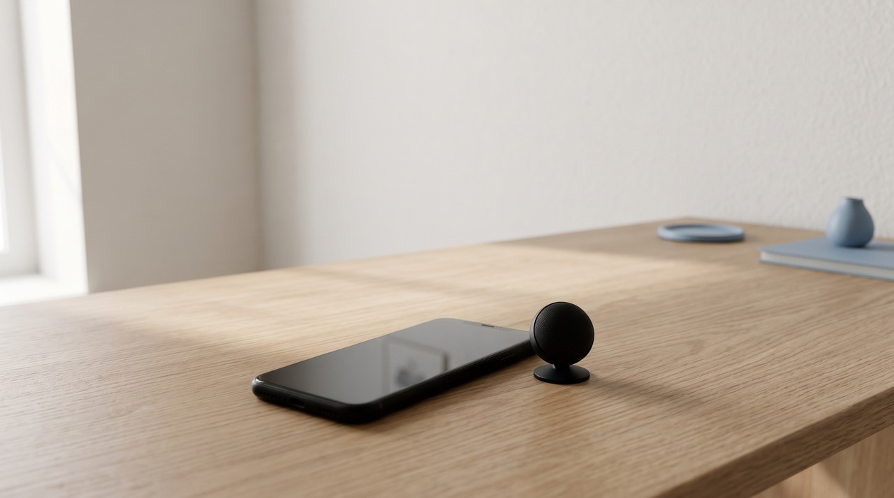
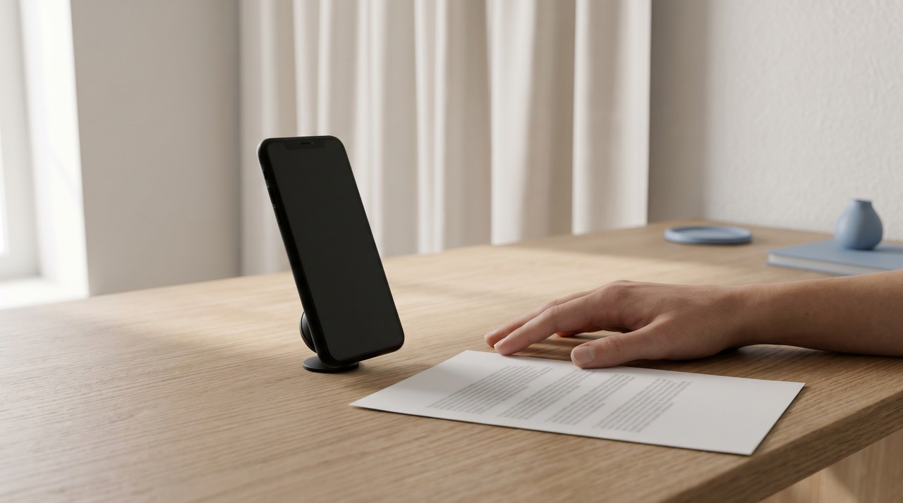
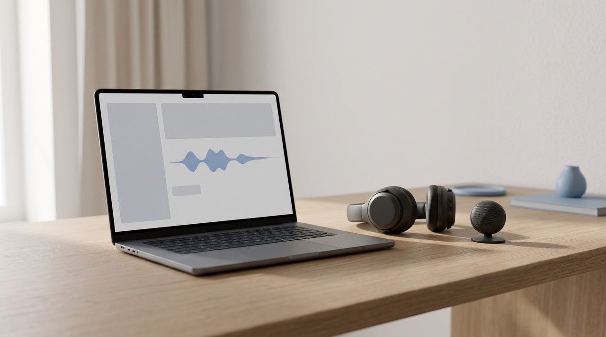

Clone your voice on iPhone with Personal Voice: free and private, but it cannot make voiceovers

Personal Voice is a free feature on your iPhone, iPad and Mac that builds a copy of your voice right on the device. Apple updated it in iOS 26 so it only needs 10 recorded phrases instead of 150. It can talk for you through Live Speech, Read & Speak, VoiceOver and other apps you approve. But Apple limits this to your own personal and non commercial use, and apps cannot capture the speech, so you cannot export it as an audio file for a YouTube voiceover.
| Personal Voice on iPhone | A cloud voice app | VoiceClone | |
|---|---|---|---|
| Price | Free, built into the phone | Usually a monthly plan | One voice free, then $49 one time |
| What you record | 10 short phrases in iOS 26 | A short sample, uploaded | 1 to 3 minutes of normal talking |
| Where the voice is made | On your device | On the company's servers | On your Windows PC |
| Can you save the audio as a file | No, apps cannot capture its speech | Yes | Yes |
| Allowed use | Your own personal, non commercial use | Depends on the plan | Your own voice, or a consenting owner's |
| Languages | English (US), Spanish (Mexico), Mandarin Chinese | Many | English |
Written by Inam. I built VoiceClone, the Windows app in the last column, so I am not neutral on this one. More of my engineering work is on designesh.com. Last updated 2 November 2026.
You might have a free voice cloner on your iPhone right now and not know it. Apple calls it Personal Voice. Since iOS 26 it learns your voice from just 10 short sentences instead of the old 150. Many people test it out and then want to know if they can use this voice for their YouTube videos.
Personal Voice is built to speak for you, and it cannot make audio files. Apple says it is for your own personal and non commercial use, so apps are not allowed to record what it says. I will explain what it actually does, why it is locked down, and what you can use when you need a voiceover file.
What is Personal Voice on iPhone?
Apple added Personal Voice in iOS 17 as an accessibility feature. They made it for people who might lose their ability to speak from an illness like ALS. You record your voice while you can still talk, and later the phone uses that voice to speak out loud when you type.
You can find it by opening Settings, going to Accessibility, and tapping Personal Voice. According to Apple's Personal Voice support page, it works on an iPhone 12 or later, on newer iPads, and on a Mac with Apple silicon. You also need to have Face ID, Touch ID or a passcode set up on your device because the voice is locked behind that security.
How many phrases does Personal Voice need now?
You used to have to read 150 random sentences out loud when the feature first came out, and that took about 15 minutes. Apple cut that down to 10 sentences in iOS 26. Apple noted in its accessibility announcement from May 2025 that this new version creates a smoother and more natural sounding voice in less than a minute by using just those 10 recorded phrases.

This is a big change because it means you can try it on your lunch break. The phone asks you to read each sentence in a quiet place, but you can pause and finish it later because your progress is saved. Right now it supports English (United States), Spanish (Mexico) and Mandarin Chinese, as 9to5Mac reported from Apple's own list. So if you speak UK English, you still have to select the US option to record it.
Is Personal Voice private?
Apple handles the privacy side of this well. Their support page says your recorded speech is processed securely on your phone, and the final voice is encrypted and stored right on the device. Only you can access it with Face ID, Touch ID or your passcode, and nothing is sent to a server to build it.
You can share the voice to your iPad or Mac through iCloud, and Apple says iCloud stores it with end to end encryption. End to end encryption means the copy in iCloud is locked with a key that only your devices hold, so Apple has no way to listen to it. The support page does give one warning about this: once you delete a Personal Voice, you can never get it back.
Where can you use your Personal Voice?
The voice works with Apple features like Live Speech, Read & Speak and VoiceOver. Live Speech is the most practical one for everyday use. You just turn it on, triple click the side button, and type a sentence so the phone can say it out loud in your voice over the speaker or during a phone call.
Other apps can use your voice, but only if you give them permission. You have to turn on Allow Apps to Request to Use in the Personal Voice settings first, and then an app can ask you for access. These are usually AAC apps, which means augmentative and alternative communication. That is the technical name for apps that help people talk by typing or tapping.
Can you use Personal Voice for YouTube or a voiceover?
You cannot use Personal Voice for a YouTube voiceover. Apple stops this in two different ways. The first block is the license rules. Apple says in its announcement that you can only use Personal Voice to make a voice that sounds like you from your own recordings, and it is strictly for your own personal, noncommercial use. Making a monetized YouTube channel, a client video or an ad is commercial use.
The second block is technical. The Apple support page says apps can use Personal Voice to speak out loud, but they are not allowed to capture speech from it. This means there is no export button, and no app can save your words as an MP3 or WAV file for your video editor. You could hold a second phone next to the speaker to record it, but the audio would sound bad and you would still be breaking the personal use rule.

Here is how the two situations look side by side.
- If you lost your voice or you are banking it for later so you can talk on phone calls, Personal Voice is the right tool and it is totally free.
- If you make videos and need a narration track in your voice that you can edit and publish, Personal Voice cannot help you. You will need to use a tool that actually saves audio files.
What should you use instead for a voiceover in your own voice?
You have two main options for making audio files. A cloud app like ElevenLabs or CapCut takes your voice sample, builds the voice on their servers, and lets you download the audio. That method works, but your voice recording gets uploaded to the internet, and the company terms decide what they can do with it. I reviewed one example of this on my page about CapCut voice clone and its terms.
The other option is a tool that runs on your own computer. This gives you privacy similar to Personal Voice, but it can actually save the audio files. I built VoiceClone to do exactly this. It is an app for Windows 10 and 11 powered by GPT-SoVITS, and you start it just by opening a file called START VoiceClone.bat. It downloads the engine on the first run, which is around 1.3 GB, and then it works entirely without the internet and never uploads anything. I explained the details of this in my article on voice cloning with no internet.
You just talk normally into your microphone for 1 to 3 minutes, and the app trains a copy of your voice locally on your PC. Having a graphics card makes the training faster, but a standard processor works fine too. You can clone and fully train one voice for free and make 3 audio generations to test how it sounds. If you like it, the $49 one time license gives you unlimited audio length, the word editor, retraining features and exports, and there is no subscription to worry about.
What does Personal Voice do better than VoiceClone?
Apple's tool still has major advantages, and it would be unfair for me to skip them. Personal Voice is completely free, it is already built into your phone, and it takes about a minute to set up. It can also speak live while you are on a phone call, which is something VoiceClone is not built to do. Personal Voice supports Spanish (Mexico) and Mandarin Chinese while my app is focused on English, and Apple's tool runs on a Mac while VoiceClone is strictly for Windows.
Use Personal Voice if you want to speak on phone calls in your own voice, but use a tool like VoiceClone if you need a voiceover file for your videos. No matter which option you pick, you should only clone your own voice or a voice from someone who gave you clear permission. If you are wondering about the rules for uploading this audio, I covered that topic in my guide on using your own AI voice on YouTube.
FAQ
Is Personal Voice free on iPhone?
Yes, Apple builds it into iOS, iPadOS and macOS at no cost. You just need an iPhone 12 or later, a supported iPad, or a Mac running Apple silicon.
Can I export my Personal Voice as an audio file?
No. The Apple support page states that apps can use Personal Voice to speak out loud, but they cannot capture the speech. This means there is no way you can save the audio as a file for video editing.
Can I use Personal Voice for YouTube videos?
No. Apple limits Personal Voice strictly to your own personal and noncommercial use. A monetized YouTube channel or paid client work counts as commercial use. You need a different tool that actually saves audio files if you want to make a voiceover.
Does Personal Voice upload my voice to Apple?
No. Apple processes your recordings right on your device, and the final voice is stored there in an encrypted format. If you want to share the voice to your other devices, iCloud stores it securely using end to end encryption so Apple cannot hear it.
Sources: Apple's support page "Create a Personal Voice on your iPhone, iPad, or Mac", Apple's Newsroom post "Apple unveils powerful accessibility features coming later this year" from May 2025, and 9to5Mac's March 2026 article on Personal Voice in iOS 26, all read on 2 November 2026, plus the VoiceClone product page on myvoiceclones.com.
Hear your own voice come back.
The free Windows app clones and fully trains one voice, yours, on your own PC. No account, no upload, and the download starts right away.